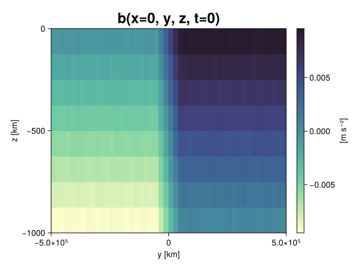
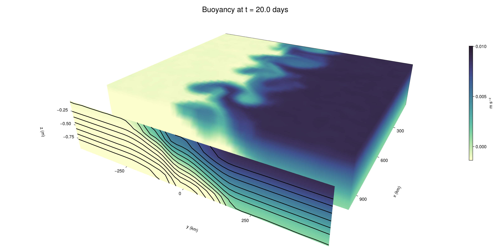

Baroclinic adjustment
In this example, we simulate the evolution and equilibration of a baroclinically unstable front.
Install dependencies
First let's make sure we have all required packages installed.
using Pkg
pkg"add Oceananigans, CairoMakie"using Oceananigans
using Oceananigans.UnitsGrid
We use a three-dimensional channel that is periodic in the x direction:
Lx = 1000kilometers # east-west extent [m]
Ly = 1000kilometers # north-south extent [m]
Lz = 1kilometers # depth [m]
grid = RectilinearGrid(size = (48, 48, 8),
x = (0, Lx),
y = (-Ly/2, Ly/2),
z = (-Lz, 0),
topology = (Periodic, Bounded, Bounded))48×48×8 RectilinearGrid{Float64, Periodic, Bounded, Bounded} on CPU with 3×3×3 halo
├── Periodic x ∈ [0.0, 1.0e6) regularly spaced with Δx=20833.3
├── Bounded y ∈ [-500000.0, 500000.0] regularly spaced with Δy=20833.3
└── Bounded z ∈ [-1000.0, 0.0] regularly spaced with Δz=125.0Model
We built a HydrostaticFreeSurfaceModel with an ImplicitFreeSurface solver. Regarding Coriolis, we use a beta-plane centered at 45° South.
model = HydrostaticFreeSurfaceModel(; grid,
coriolis = BetaPlane(latitude = -45),
buoyancy = BuoyancyTracer(),
tracers = :b,
momentum_advection = WENO(),
tracer_advection = WENO())HydrostaticFreeSurfaceModel{CPU, RectilinearGrid}(time = 0 seconds, iteration = 0)
├── grid: 48×48×8 RectilinearGrid{Float64, Periodic, Bounded, Bounded} on CPU with 3×3×3 halo
├── timestepper: QuasiAdamsBashforth2TimeStepper
├── tracers: b
├── closure: Nothing
├── buoyancy: BuoyancyTracer with ĝ = NegativeZDirection()
├── free surface: ImplicitFreeSurface with gravitational acceleration 9.80665 m s⁻²
│ └── solver: FFTImplicitFreeSurfaceSolver
├── advection scheme:
│ ├── momentum: WENO reconstruction order 5
│ └── b: WENO reconstruction order 5
└── coriolis: BetaPlane{Float64}We start our simulation from rest with a baroclinically unstable buoyancy distribution. We use ramp(y, Δy), defined below, to specify a front with width Δy and horizontal buoyancy gradient M². We impose the front on top of a vertical buoyancy gradient N² and a bit of noise.
"""
ramp(y, Δy)
Linear ramp from 0 to 1 between -Δy/2 and +Δy/2.
For example:
```
y < -Δy/2 => ramp = 0
-Δy/2 < y < -Δy/2 => ramp = y / Δy
y > Δy/2 => ramp = 1
```
"""
ramp(y, Δy) = min(max(0, y/Δy + 1/2), 1)
N² = 1e-5 # [s⁻²] buoyancy frequency / stratification
M² = 1e-7 # [s⁻²] horizontal buoyancy gradient
Δy = 100kilometers # width of the region of the front
Δb = Δy * M² # buoyancy jump associated with the front
ϵb = 1e-2 * Δb # noise amplitude
bᵢ(x, y, z) = N² * z + Δb * ramp(y, Δy) + ϵb * randn()
set!(model, b=bᵢ)Let's visualize the initial buoyancy distribution.
using CairoMakie
# Build coordinates with units of kilometers
x, y, z = 1e-3 .* nodes(grid, (Center(), Center(), Center()))
b = model.tracers.b
fig, ax, hm = heatmap(view(b, 1, :, :),
colormap = :deep,
axis = (xlabel = "y [km]",
ylabel = "z [km]",
title = "b(x=0, y, z, t=0)",
titlesize = 24))
Colorbar(fig[1, 2], hm, label = "[m s⁻²]")
fig
Simulation
Now let's build a Simulation.
simulation = Simulation(model, Δt=20minutes, stop_time=20days)Simulation of HydrostaticFreeSurfaceModel{CPU, RectilinearGrid}(time = 0 seconds, iteration = 0)
├── Next time step: 20 minutes
├── Elapsed wall time: 0 seconds
├── Wall time per iteration: NaN days
├── Stop time: 20 days
├── Stop iteration : Inf
├── Wall time limit: Inf
├── Callbacks: OrderedDict with 4 entries:
│ ├── stop_time_exceeded => Callback of stop_time_exceeded on IterationInterval(1)
│ ├── stop_iteration_exceeded => Callback of stop_iteration_exceeded on IterationInterval(1)
│ ├── wall_time_limit_exceeded => Callback of wall_time_limit_exceeded on IterationInterval(1)
│ └── nan_checker => Callback of NaNChecker for u on IterationInterval(100)
├── Output writers: OrderedDict with no entries
└── Diagnostics: OrderedDict with no entriesWe add a TimeStepWizard callback to adapt the simulation's time-step,
conjure_time_step_wizard!(simulation, IterationInterval(20), cfl=0.2, max_Δt=20minutes)Also, we add a callback to print a message about how the simulation is going,
using Printf
wall_clock = Ref(time_ns())
function print_progress(sim)
u, v, w = model.velocities
progress = 100 * (time(sim) / sim.stop_time)
elapsed = (time_ns() - wall_clock[]) / 1e9
@printf("[%05.2f%%] i: %d, t: %s, wall time: %s, max(u): (%6.3e, %6.3e, %6.3e) m/s, next Δt: %s\n",
progress, iteration(sim), prettytime(sim), prettytime(elapsed),
maximum(abs, u), maximum(abs, v), maximum(abs, w), prettytime(sim.Δt))
wall_clock[] = time_ns()
return nothing
end
add_callback!(simulation, print_progress, IterationInterval(100))Diagnostics/Output
Here, we save the buoyancy, $b$, at the edges of our domain as well as the zonal ($x$) average of buoyancy.
u, v, w = model.velocities
ζ = ∂x(v) - ∂y(u)
B = Average(b, dims=1)
U = Average(u, dims=1)
V = Average(v, dims=1)
filename = "baroclinic_adjustment"
save_fields_interval = 0.5day
slicers = (east = (grid.Nx, :, :),
north = (:, grid.Ny, :),
bottom = (:, :, 1),
top = (:, :, grid.Nz))
for side in keys(slicers)
indices = slicers[side]
simulation.output_writers[side] = JLD2OutputWriter(model, (; b, ζ);
filename = filename * "_$(side)_slice",
schedule = TimeInterval(save_fields_interval),
overwrite_existing = true,
indices)
end
simulation.output_writers[:zonal] = JLD2OutputWriter(model, (; b=B, u=U, v=V);
filename = filename * "_zonal_average",
schedule = TimeInterval(save_fields_interval),
overwrite_existing = true)JLD2OutputWriter scheduled on TimeInterval(12 hours):
├── filepath: ./baroclinic_adjustment_zonal_average.jld2
├── 3 outputs: (b, u, v)
├── array type: Array{Float64}
├── including: [:grid, :coriolis, :buoyancy, :closure]
├── file_splitting: NoFileSplitting
└── file size: 30.7 KiBNow we're ready to run.
@info "Running the simulation..."
run!(simulation)
@info "Simulation completed in " * prettytime(simulation.run_wall_time)[ Info: Running the simulation...
[ Info: Initializing simulation...
[00.00%] i: 0, t: 0 seconds, wall time: 24.292 seconds, max(u): (0.000e+00, 0.000e+00, 0.000e+00) m/s, next Δt: 20 minutes
[ Info: ... simulation initialization complete (28.005 seconds)
[ Info: Executing initial time step...
[ Info: ... initial time step complete (22.740 seconds).
[06.94%] i: 100, t: 1.389 days, wall time: 41.294 seconds, max(u): (1.280e-01, 1.255e-01, 1.497e-03) m/s, next Δt: 20 minutes
[13.89%] i: 200, t: 2.778 days, wall time: 1.681 seconds, max(u): (2.216e-01, 1.787e-01, 1.773e-03) m/s, next Δt: 20 minutes
[20.83%] i: 300, t: 4.167 days, wall time: 1.510 seconds, max(u): (2.964e-01, 2.335e-01, 1.812e-03) m/s, next Δt: 20 minutes
[27.78%] i: 400, t: 5.556 days, wall time: 1.063 seconds, max(u): (3.675e-01, 3.172e-01, 1.884e-03) m/s, next Δt: 20 minutes
[34.72%] i: 500, t: 6.944 days, wall time: 1.119 seconds, max(u): (4.335e-01, 4.984e-01, 1.807e-03) m/s, next Δt: 20 minutes
[41.67%] i: 600, t: 8.333 days, wall time: 1.097 seconds, max(u): (5.892e-01, 7.662e-01, 2.604e-03) m/s, next Δt: 20 minutes
[48.61%] i: 700, t: 9.722 days, wall time: 1.177 seconds, max(u): (8.559e-01, 1.110e+00, 3.235e-03) m/s, next Δt: 20 minutes
[55.56%] i: 800, t: 11.111 days, wall time: 1.259 seconds, max(u): (1.252e+00, 1.194e+00, 4.302e-03) m/s, next Δt: 20 minutes
[62.50%] i: 900, t: 12.500 days, wall time: 1.450 seconds, max(u): (1.463e+00, 1.191e+00, 4.567e-03) m/s, next Δt: 20 minutes
[69.44%] i: 1000, t: 13.889 days, wall time: 1.223 seconds, max(u): (1.287e+00, 1.142e+00, 4.728e-03) m/s, next Δt: 20 minutes
[76.39%] i: 1100, t: 15.278 days, wall time: 1.093 seconds, max(u): (1.365e+00, 1.073e+00, 3.941e-03) m/s, next Δt: 20 minutes
[83.33%] i: 1200, t: 16.667 days, wall time: 1.111 seconds, max(u): (1.289e+00, 1.205e+00, 2.914e-03) m/s, next Δt: 20 minutes
[90.28%] i: 1300, t: 18.056 days, wall time: 1.092 seconds, max(u): (1.309e+00, 1.120e+00, 3.323e-03) m/s, next Δt: 20 minutes
[97.22%] i: 1400, t: 19.444 days, wall time: 1.105 seconds, max(u): (1.379e+00, 1.170e+00, 2.303e-03) m/s, next Δt: 20 minutes
[ Info: Simulation is stopping after running for 1.198 minutes.
[ Info: Simulation time 20 days equals or exceeds stop time 20 days.
[ Info: Simulation completed in 1.199 minutes
Visualization
All that's left is to make a pretty movie. Actually, we make two visualizations here. First, we illustrate how to make a 3D visualization with Makie's Axis3 and Makie.surface. Then we make a movie in 2D. We use CairoMakie in this example, but note that using GLMakie is more convenient on a system with OpenGL, as figures will be displayed on the screen.
using CairoMakieThree-dimensional visualization
We load the saved buoyancy output on the top, north, and east surface as FieldTimeSerieses.
filename = "baroclinic_adjustment"
sides = keys(slicers)
slice_filenames = NamedTuple(side => filename * "_$(side)_slice.jld2" for side in sides)
b_timeserieses = (east = FieldTimeSeries(slice_filenames.east, "b"),
north = FieldTimeSeries(slice_filenames.north, "b"),
top = FieldTimeSeries(slice_filenames.top, "b"))
B_timeseries = FieldTimeSeries(filename * "_zonal_average.jld2", "b")
times = B_timeseries.times
grid = B_timeseries.grid48×48×8 RectilinearGrid{Float64, Periodic, Bounded, Bounded} on CPU with 3×3×3 halo
├── Periodic x ∈ [0.0, 1.0e6) regularly spaced with Δx=20833.3
├── Bounded y ∈ [-500000.0, 500000.0] regularly spaced with Δy=20833.3
└── Bounded z ∈ [-1000.0, 0.0] regularly spaced with Δz=125.0We build the coordinates. We rescale horizontal coordinates to kilometers.
xb, yb, zb = nodes(b_timeserieses.east)
xb = xb ./ 1e3 # convert m -> km
yb = yb ./ 1e3 # convert m -> km
Nx, Ny, Nz = size(grid)
x_xz = repeat(x, 1, Nz)
y_xz_north = y[end] * ones(Nx, Nz)
z_xz = repeat(reshape(z, 1, Nz), Nx, 1)
x_yz_east = x[end] * ones(Ny, Nz)
y_yz = repeat(y, 1, Nz)
z_yz = repeat(reshape(z, 1, Nz), grid.Ny, 1)
x_xy = x
y_xy = y
z_xy_top = z[end] * ones(grid.Nx, grid.Ny)Then we create a 3D axis. We use zonal_slice_displacement to control where the plot of the instantaneous zonal average flow is located.
fig = Figure(size = (1600, 800))
zonal_slice_displacement = 1.2
ax = Axis3(fig[2, 1],
aspect=(1, 1, 1/5),
xlabel = "x (km)",
ylabel = "y (km)",
zlabel = "z (m)",
xlabeloffset = 100,
ylabeloffset = 100,
zlabeloffset = 100,
limits = ((x[1], zonal_slice_displacement * x[end]), (y[1], y[end]), (z[1], z[end])),
elevation = 0.45,
azimuth = 6.8,
xspinesvisible = false,
zgridvisible = false,
protrusions = 40,
perspectiveness = 0.7)Axis3()We use data from the final savepoint for the 3D plot. Note that this plot can easily be animated by using Makie's Observable. To dive into Observables, check out Makie.jl's Documentation.
n = length(times)41Now let's make a 3D plot of the buoyancy and in front of it we'll use the zonally-averaged output to plot the instantaneous zonal-average of the buoyancy.
b_slices = (east = interior(b_timeserieses.east[n], 1, :, :),
north = interior(b_timeserieses.north[n], :, 1, :),
top = interior(b_timeserieses.top[n], :, :, 1))
# Zonally-averaged buoyancy
B = interior(B_timeseries[n], 1, :, :)
clims = 1.1 .* extrema(b_timeserieses.top[n][:])
kwargs = (colorrange=clims, colormap=:deep, shading=NoShading)
surface!(ax, x_yz_east, y_yz, z_yz; color = b_slices.east, kwargs...)
surface!(ax, x_xz, y_xz_north, z_xz; color = b_slices.north, kwargs...)
surface!(ax, x_xy, y_xy, z_xy_top; color = b_slices.top, kwargs...)
sf = surface!(ax, zonal_slice_displacement .* x_yz_east, y_yz, z_yz; color = B, kwargs...)
contour!(ax, y, z, B; transformation = (:yz, zonal_slice_displacement * x[end]),
levels = 15, linewidth = 2, color = :black)
Colorbar(fig[2, 2], sf, label = "m s⁻²", height = Relative(0.4), tellheight=false)
title = "Buoyancy at t = " * string(round(times[n] / day, digits=1)) * " days"
fig[1, 1:2] = Label(fig, title; fontsize = 24, tellwidth = false, padding = (0, 0, -120, 0))
rowgap!(fig.layout, 1, Relative(-0.2))
colgap!(fig.layout, 1, Relative(-0.1))
save("baroclinic_adjustment_3d.png", fig)
Two-dimensional movie
We make a 2D movie that shows buoyancy $b$ and vertical vorticity $ζ$ at the surface, as well as the zonally-averaged zonal and meridional velocities $U$ and $V$ in the $(y, z)$ plane. First we load the FieldTimeSeries and extract the additional coordinates we'll need for plotting
ζ_timeseries = FieldTimeSeries(slice_filenames.top, "ζ")
U_timeseries = FieldTimeSeries(filename * "_zonal_average.jld2", "u")
B_timeseries = FieldTimeSeries(filename * "_zonal_average.jld2", "b")
V_timeseries = FieldTimeSeries(filename * "_zonal_average.jld2", "v")
xζ, yζ, zζ = nodes(ζ_timeseries)
yv = ynodes(V_timeseries)
xζ = xζ ./ 1e3 # convert m -> km
yζ = yζ ./ 1e3 # convert m -> km
yv = yv ./ 1e3 # convert m -> km49-element Vector{Float64}:
-500.0
-479.1666666666667
-458.3333333333333
-437.5
-416.6666666666667
-395.8333333333333
-375.0
-354.1666666666667
-333.3333333333333
-312.5
-291.6666666666667
-270.8333333333333
-250.0
-229.16666666666666
-208.33333333333334
-187.5
-166.66666666666666
-145.83333333333334
-125.0
-104.16666666666667
-83.33333333333333
-62.5
-41.666666666666664
-20.833333333333332
0.0
20.833333333333332
41.666666666666664
62.5
83.33333333333333
104.16666666666667
125.0
145.83333333333334
166.66666666666666
187.5
208.33333333333334
229.16666666666666
250.0
270.8333333333333
291.6666666666667
312.5
333.3333333333333
354.1666666666667
375.0
395.8333333333333
416.6666666666667
437.5
458.3333333333333
479.1666666666667
500.0Next, we set up a plot with 4 panels. The top panels are large and square, while the bottom panels get a reduced aspect ratio through rowsize!.
set_theme!(Theme(fontsize=24))
fig = Figure(size=(1800, 1000))
axb = Axis(fig[1, 2], xlabel="x (km)", ylabel="y (km)", aspect=1)
axζ = Axis(fig[1, 3], xlabel="x (km)", ylabel="y (km)", aspect=1, yaxisposition=:right)
axu = Axis(fig[2, 2], xlabel="y (km)", ylabel="z (m)")
axv = Axis(fig[2, 3], xlabel="y (km)", ylabel="z (m)", yaxisposition=:right)
rowsize!(fig.layout, 2, Relative(0.3))To prepare a plot for animation, we index the timeseries with an Observable,
n = Observable(1)
b_top = @lift interior(b_timeserieses.top[$n], :, :, 1)
ζ_top = @lift interior(ζ_timeseries[$n], :, :, 1)
U = @lift interior(U_timeseries[$n], 1, :, :)
V = @lift interior(V_timeseries[$n], 1, :, :)
B = @lift interior(B_timeseries[$n], 1, :, :)Observable([-0.009355065122071288 -0.00811681794081894 -0.00688273597700523 -0.0056326070363945 -0.0043845853209489435 -0.003124535896295237 -0.001874101569195837 -0.0006347926493912866; -0.00937246850363073 -0.008112411486940406 -0.006883243339131556 -0.005609070777011546 -0.004370746217950781 -0.003117174765924087 -0.0018714078207248905 -0.0005858624678049706; -0.009353237297632589 -0.008141556646119853 -0.006888892667453622 -0.0056188933663702595 -0.004365810839555264 -0.0031167876590583467 -0.001865120835336011 -0.0006318517318530475; -0.009374995557883662 -0.00813176747777449 -0.0068781620526112966 -0.005652032830511397 -0.0043912003526759445 -0.0031454306100311726 -0.0018679854618596757 -0.0006426661524393207; -0.009352508555488049 -0.008129120632743904 -0.006854806600102285 -0.00559612117189377 -0.004355506660887831 -0.003126264836876955 -0.0018804747163297315 -0.0006424858544867206; -0.009394433733220098 -0.008115182333859442 -0.0068750146271952 -0.005604241601635665 -0.004363566750927199 -0.003109852518176175 -0.0018648870765885185 -0.0006128255409091158; -0.00936445464293098 -0.008125564070688531 -0.006854416381684036 -0.005664661101342097 -0.00440596812423361 -0.0031193306035492345 -0.0018912389117459862 -0.0006224772450200252; -0.00937826255580256 -0.008118956791542698 -0.00686863660673982 -0.005622792379964249 -0.004362006019978558 -0.0031205078830760166 -0.001858887155677157 -0.0006506968678146802; -0.009375116667091713 -0.008107520604340994 -0.006868792248043411 -0.005635346267927897 -0.004372259293578957 -0.0031157536643263185 -0.0018768707103412729 -0.0006064961806659436; -0.009361590462429755 -0.00810592898223054 -0.006867342035444815 -0.005619036736095868 -0.004378728786645734 -0.0031230932028162334 -0.0018849375658580283 -0.0006410955713085149; -0.009371532853791116 -0.008115080319493677 -0.006893095859143526 -0.0056118345243900344 -0.004370962491011314 -0.0031451715432399253 -0.0018842777067890797 -0.0006162231828365068; -0.00939551073467683 -0.008140035581995076 -0.006902210054678957 -0.005600735280096938 -0.004379676992017766 -0.0031358218785479826 -0.0018543086225500094 -0.0006000162867161738; -0.009385165239154008 -0.008113364307517815 -0.0068791121077622945 -0.005627939229689303 -0.004391771978735189 -0.003117816162822923 -0.0018698378787898916 -0.000625172951074465; -0.009375368105457386 -0.008127840709679158 -0.006871639419181443 -0.005634883943556194 -0.004357601464879336 -0.003127433334803881 -0.0018686004405754101 -0.0006296959115545108; -0.00938068193895903 -0.008139577225937984 -0.00687962298215724 -0.005595398117218428 -0.00437641853750119 -0.0031112224290156068 -0.001881910575696459 -0.0006068863556631668; -0.009371235921156662 -0.00815696513254173 -0.006874256306235183 -0.005613878738056639 -0.004368731546691251 -0.0031289292285457157 -0.0018702693625122406 -0.000646847183394987; -0.00937708688673712 -0.008125027624721606 -0.006853165441248646 -0.0056223644222585765 -0.004373286822424857 -0.003138619629631042 -0.0018620342678927126 -0.0006380487666534635; -0.009376520682908125 -0.00814670565543849 -0.006901401981971335 -0.005623183139442178 -0.004384518137636593 -0.003129277102914671 -0.0018634680529475399 -0.000634429224465221; -0.00936579898384401 -0.008130636983826338 -0.006881607489675277 -0.005633042978795525 -0.004389288869286402 -0.0031464498062963933 -0.0018877888442636632 -0.0006290733187671723; -0.009357744161327184 -0.008096905622160526 -0.006885899118076885 -0.005618810961341969 -0.004379922890538386 -0.003136020668884329 -0.0018587085867916749 -0.0006111362850246859; -0.009375097945425839 -0.008085291193960358 -0.00686068404995117 -0.005618197796048431 -0.004382921177054303 -0.003146109855356173 -0.0018753710266409178 -0.0005962382806283803; -0.00939281774505081 -0.008130481425866726 -0.006874190053906343 -0.00560962794710855 -0.00437926975745855 -0.0031286534200195408 -0.0018514615519695209 -0.000629059107964464; -0.007506452059521214 -0.006246921836343004 -0.004995584717680368 -0.0037499401966773287 -0.0025035876009549553 -0.0012694659326994092 -2.7512414293406324e-5 0.0012407352456679259; -0.005428356505233882 -0.00414495639884142 -0.0029162341441012567 -0.0016553430985521507 -0.00042140371456534536 0.0008207188754905401 0.0020610505290292827 0.0033417781404697857; -0.0033258303382862416 -0.0021016021074687294 -0.0008156375470120735 0.00041639389261877423 0.0016594630481816068 0.002924073488185755 0.004153273192606384 0.0054351275306864; -0.0012499025423336676 -1.844842164610683e-5 0.001239043697881534 0.0024611725881112387 0.0037472262624202173 0.004978918794369199 0.0062524928021275746 0.00751480412162997; 0.0006138807964325834 0.0018611619986941188 0.0031507704250753783 0.00440967190294834 0.005626970192532065 0.006899487009361598 0.008111831997854382 0.009370427644388552; 0.0006142088801906317 0.0019083315069747472 0.0031597812112073797 0.004366970257613911 0.005638482795788521 0.006868216256482445 0.008108800071206379 0.009369081950892732; 0.0006402906104018539 0.001854114535090843 0.0031115880208676372 0.004366607703992534 0.005634693505187558 0.006867917999760169 0.008151377045579377 0.009358073718183294; 0.0006679416548928578 0.0018899063305716178 0.003131714086953292 0.004397180856147276 0.005618385524353245 0.0068598863277828034 0.008117941104131212 0.009388742912207685; 0.0006072355420819631 0.0018820469915135152 0.003120196513109885 0.0043770936128941325 0.005622859786298287 0.00688343049010313 0.008122597613330335 0.009386249744065307; 0.0006319232388641705 0.0018578230010936122 0.003114542261636354 0.004391698766556513 0.005619750232457183 0.006886416826357941 0.008116194735711605 0.009371976221826941; 0.0006143105383747648 0.001887796378415546 0.0031349513974087266 0.004374420214204726 0.005643800133074838 0.006855803040612496 0.008153280231732144 0.00934368848637049; 0.000639755717614919 0.0019005263396381167 0.0031331834541728095 0.00436134988537066 0.005624756178290047 0.0068769172835912926 0.008110838719456405 0.009387250631556673; 0.000618306385177606 0.0018443504934944524 0.003125277312136065 0.0043842256228386915 0.005613413679795988 0.006876248582412544 0.008148426757733064 0.009396040689564457; 0.0006345274935906052 0.0018904439743177603 0.0031521443452522807 0.004372587347865801 0.005609671501131247 0.006870809926978955 0.0081229975172918 0.009373800805417956; 0.0006256565557619032 0.001886787579008381 0.00311713179593457 0.0043758716155519635 0.005632380176933769 0.00687335309514021 0.008149560650420525 0.009372873771075811; 0.0006284248817958713 0.001871519599268243 0.003120112210920551 0.004381297591540662 0.005627270066969707 0.006868761675305766 0.00813972577540318 0.009380860081817865; 0.0006150925906017423 0.001883909475210854 0.0031136118015664877 0.004385659842343047 0.005632877892963471 0.006838972144756238 0.00811271075528396 0.009346920631534963; 0.0006205975843730727 0.0018459949140392368 0.0031716215016146976 0.004376843576002212 0.005653906023165625 0.006863734753971132 0.00811483168937774 0.009380974580987925; 0.0006234727073804279 0.0018926027212253218 0.0031356720777911368 0.004364960629873113 0.005605140920668643 0.006860156166739499 0.0081057198599089 0.009395248053618015; 0.0006205011183701762 0.001843514378326259 0.0031351478716111596 0.004385481721602895 0.0056269001499731535 0.006865694228490433 0.008112689550792918 0.009360163571052627; 0.000641993032418514 0.0018766073255425907 0.0031268105159105025 0.004367444511204817 0.005627624491940567 0.006886375636985853 0.008138569954469892 0.009372555602748057; 0.0006450801326670155 0.0018940236085511252 0.003113435929749596 0.004388804709412813 0.005629332819611828 0.006883279850664008 0.008126845404603173 0.009393899735318083; 0.0006188823752277317 0.0018774573297091859 0.0031227543697676884 0.004373769785463294 0.005614672598817392 0.006876598150454396 0.00809995236343525 0.009381304778796317; 0.0006128365946095215 0.0018687512774662556 0.003094995081103488 0.0043718567691334404 0.005618125948452005 0.006890379841189435 0.008111442347556319 0.009379535755487679; 0.0006262854679953912 0.0018909257974515277 0.0031358481633280426 0.004376538165044606 0.005619208095557778 0.00687451735585224 0.008136546637760289 0.009379554948390078; 0.0006357659081236664 0.0018704501739423148 0.003121392308802859 0.004374680200070001 0.005620635302853136 0.006870155857943446 0.00812255795283135 0.009376581604919628])
and then build our plot:
hm = heatmap!(axb, xb, yb, b_top, colorrange=(0, Δb), colormap=:thermal)
Colorbar(fig[1, 1], hm, flipaxis=false, label="Surface b(x, y) (m s⁻²)")
hm = heatmap!(axζ, xζ, yζ, ζ_top, colorrange=(-5e-5, 5e-5), colormap=:balance)
Colorbar(fig[1, 4], hm, label="Surface ζ(x, y) (s⁻¹)")
hm = heatmap!(axu, yb, zb, U; colorrange=(-5e-1, 5e-1), colormap=:balance)
Colorbar(fig[2, 1], hm, flipaxis=false, label="Zonally-averaged U(y, z) (m s⁻¹)")
contour!(axu, yb, zb, B; levels=15, color=:black)
hm = heatmap!(axv, yv, zb, V; colorrange=(-1e-1, 1e-1), colormap=:balance)
Colorbar(fig[2, 4], hm, label="Zonally-averaged V(y, z) (m s⁻¹)")
contour!(axv, yb, zb, B; levels=15, color=:black)Finally, we're ready to record the movie.
frames = 1:length(times)
record(fig, filename * ".mp4", frames, framerate=8) do i
n[] = i
endThis page was generated using Literate.jl.